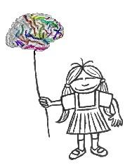
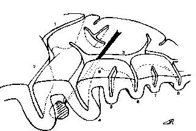

About Anatomist

Description
BrainVISA software relies on
Anatomist software visualization capacities. Anatomist
has been designed in the Service Hospitalier Frédéric Joliot of CEA. It is now developped in Neurospin, in JF Mangin's team, LNAO.
The current version stems from ten years of work on several prototypes.
One of its main original features is the generic module dedicated to structural data (various graphs).
Anatomist is mainly developped by Denis Rivière and Dimitri Papadopoulos-Orfanos.
A lot of other contributors, however, have added some features:
Cyril Poupon, Fabrice Poupon, Renaud Maroy, Bernard Secher, Olivier Pizzato, Fabien Delaye,
Jean-Francois Mangin, Vincent Frouin, etc...
For the time being, Anatomist is only described in an abstract
related to a presentation in HBM'2000:
A structural browser of brain anatomy.
D. Rivière, D. Papadopoulos-Orfanos, J. Régis and J.-F. Mangin.
NeuroImage, 11(5), HBM, San Antonio, 2000
Anatomist and the segmentation toolbox gathered in
Brainvisa stem from ten years of collaborations between
the following teams:
- Jean-Francois Mangin's team,
is in charge of the design of the softwares and of the segmentation algorithms;

UNAF
Service Hospitalier Frédéric Joliot
Département de Recherche Medicale, CEA
4 place du général Leclerc
91401 Orsay Cedex
France
-
Jean Régis's team, specialist of epilepsy surgery,
radiosurgery (Gamma Knife), and cortical surface folding,
contributes to anatomical research and uses the softwares
in the context of depth electrodes implantation (SEEG);

Service de Neurochirurgie Fonctionnelle et Stéréotaxique
CHU La Timone
254 rue Saint-Pierre
13005 Marseille
France
-
Vincent Frouin's team, from which stems JF Mangin's team, develops the part
of the framework dedicated to PET analysis and animal imaging.
UIIBP
Service Hospitalier Frédéric Joliot
Département de Recherche Medicale, CEA
4 place du général Leclerc
91401 Orsay Cedex
-
The Nuclear Medicine Service of Val-de-Grâce Hospital, Paris (J.-F. Gaillard and H. Foehrenbach) is in charge of the applications to nuclear medicine.
-
Isabelle Bloch's team, is implied in algorithmic research related
to multimodal data fusion.
ENST
CNRS URA 820
Département Traitement du Signal et des Images
46 rue Barrault
75013 Paris
France
WWW: http://www.tsi.enst.fr
Anatomist's design has been supported by the GIS cognition science (french research ministry),
by the "mission pour le développement de l'innovation participative" (délégation générale pour l'armement), and by Elekta.